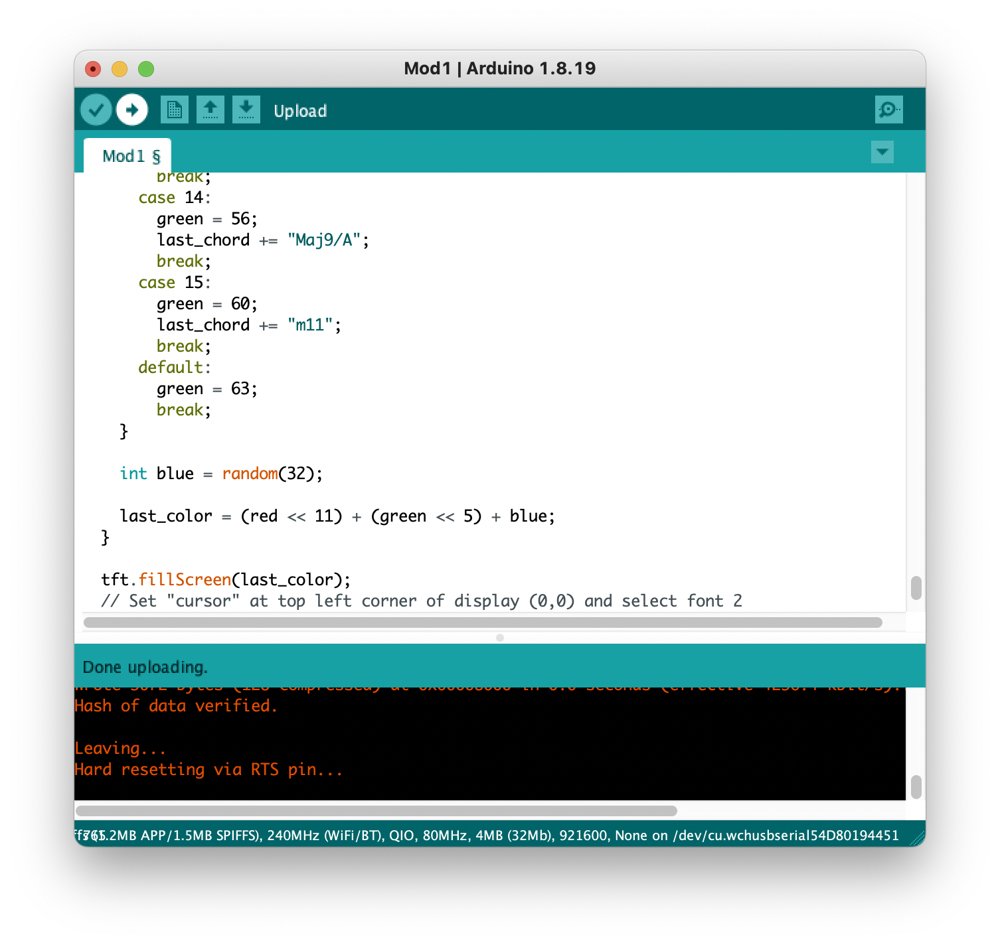

Generally, the setup of the ESP32 followed this guide from Prof. Santolucito. However, users with a newer version of MacOS may need to install additional drivers, as discussed in this thread.
As with most Arduino code, the Arduino sketch includes setup() and loop() functions. The setup() function simply initializes the display, sets the rotation, fills the screen with white, and sets a random seed using an unused analog pin.
The loop() function, however, has the bulk of the functionality. Outside of both of these functions exists an array of structs named song that includes information about each chord and word change. The struct has the following values:
String letters; // new word if applicable, "" if just a chord change
int chordRoot; // value from 0 to 7 representing the chord root (-1 if no chord change)
int chordModifier; // value from 0 to 15 representing the chord quality (-1 if no chord change)
int len; // length of this segment in milliseconds
Based on which chords and chord types were in the song (see artistic documentation for more information), the following mappings were created:
| 0 | 1 | 2 | 3 | 4 | 5 | 6 | 7 | 8 | 9 | 10 | 11 | 12 | 13 | 14 | 15 | |
|---|---|---|---|---|---|---|---|---|---|---|---|---|---|---|---|---|
| chordRoot | F | G | A | Bb | B | C | Db | D | ||||||||
| chordModifier | "" (major) | /A | dim | m6 | add4 | m7 | 7 | m7b5 | 7sus | 7#5 | 7#9 | m9 | 9 | Maj9 | Maj9/A | m11 |
As the song is in the key of F, generally chordRoot increases as the chord gets higher from F, while chordModifier increases as the chord gets more complex. Within the loop() function, if there is a new chord, a new color is computed by having chordRoot map to a red value, chordModifier map to a green value, and a 5-bit random number determine the blue value, as defined in the Adafruit GFX Library. For every new chord, this new color is written to the screen while every new chord or word updates the corresponding values on the screen. The len field in the struct is then used to delay the loop by the appropriate amount of the song (14 milliseconds are subtracted to take into account the time it takes to rewrite onto the screen although this may have to be altered for each specific device).
While the first few elements of the struct were added manually, this ultimately proved to be tedious. As such, the song file was added into Logic Pro (Garageband or other free alternatives would suffice). I then moved the cursor right before each word and chord change and recorded the timestamp and corresponding information in a tab-separated text file. I then wrote this Python script that parsed the text file and outputted the correct struct array to standard out, which could then be copied into the Arduino sketch for ease of use. While this script takes into account Logic's timecode structure of minute:second:1/25th second.1/80th second, the script could be easily modified to take into account other softwares' timecode structure.
Using the Arduino IDE, clicking the Upload button will send the sketch to the device. The /dev/cu.wchusbserial port should be selected if using MacOS as discussed in the driver link above. 